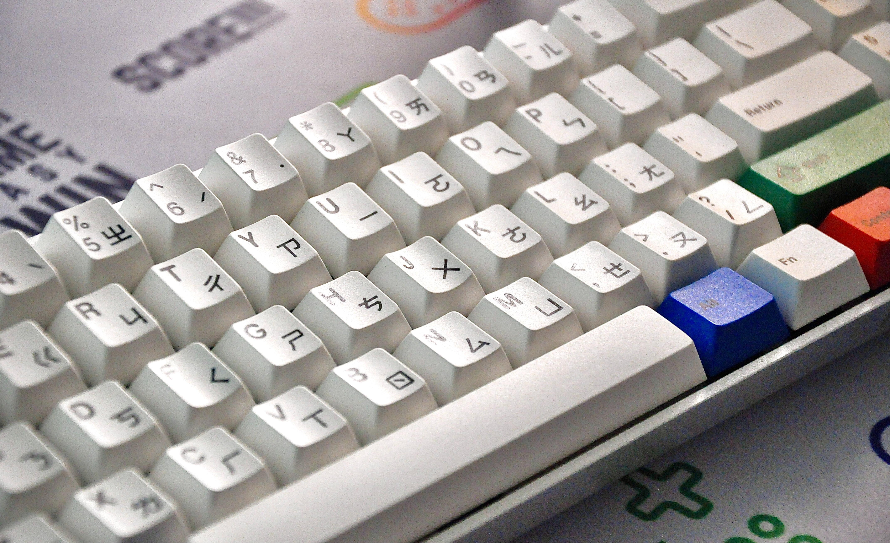
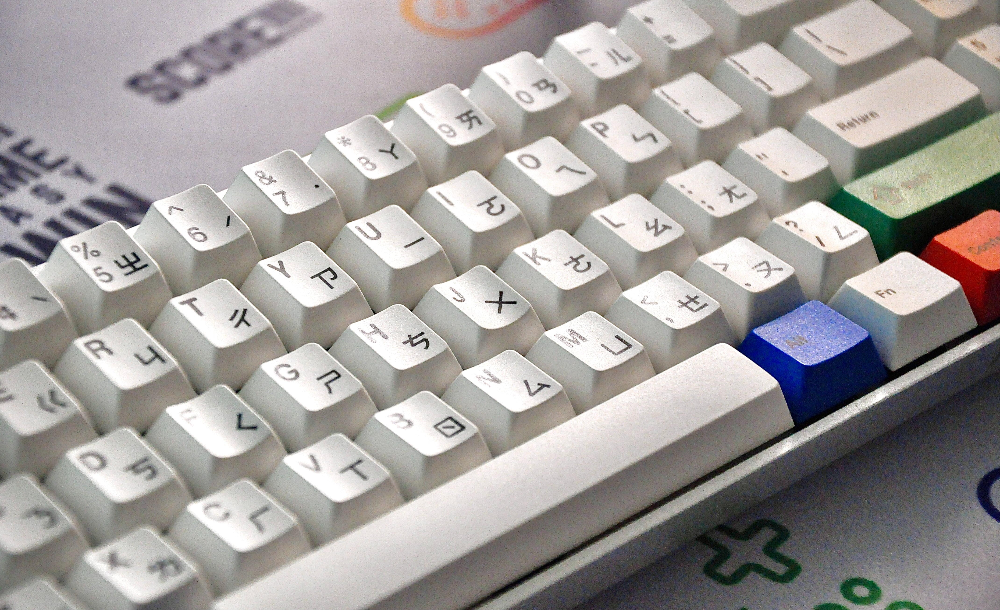

Ever Wonder How A Computer Work ?

Once upon a time, in a small village named Techland, there lived a curious and intelligent little girl
named Lily. Lily was always fascinated by the magical world of computers. She loved exploring the endless
possibilities they offered and dreamed of understanding how they worked.
One sunny day, while Lily was playing in her backyard, she stumbled upon a mysterious, old-looking book.
The title on the cover read, "The Secret of Computerland." Lily's eyes sparkled with excitement as she opened
the book, discovering a world of knowledge about computers.
As she read the book, Lily learned that a computer was like a magic box filled with tiny electronic parts
called components. These components worked together to perform incredible tasks. She discovered that the most
important part of a computer was called the "central processing unit" or CPU. It was the brain of the computer
that controlled everything.
Intrigued, Lily decided to embark on an adventure to Computerland, a land filled with talking chips,
electronic circuits, and binary numbers. As she journeyed through this enchanting place, she met a friendly
chip named Chipper.
Chipper explained that a computer understood information in a special language called binary code, which
consisted of only two numbers: 0 and 1. He showed Lily that the computer used these numbers to represent all
kinds of information, like letters, numbers, colors, and even pictures.
As Lily explored Computerland further, she learned about other essential components. She discovered the
memory, which stored all the information the computer needed to do its work, and the hard drive, where
files and programs were stored for later use.
Lily also met the keyboard and mouse, which allowed users to input commands and interact with the computer.
She marveled at the monitor, which displayed all the beautiful images and words created by the computer.
With each new discovery, Lily's understanding of computers grew. She realized that the computer's power came
from the combined efforts of all these components working together seamlessly.
Filled with excitement, Lily returned home from Computerland, eager to share her newfound knowledge with her
friends and family. She explained to them how a computer worked, from the CPU to the memory, and how it
processed information using binary code.
Inspired by Lily's passion, her friends and family started to explore the world of computers themselves.
They discovered the wonders of coding, designing beautiful graphics, and even creating their own games.
From that day forward, Lily became known as the "Tech Wizard" in her village, sharing her knowledge and
helping others understand the magic of computers. Together, they embraced the incredible possibilities that
computers offered, making their lives more creative, connected, and full of endless adventures.
And so, in the village of Techland, the love for computers and the desire to explore their secrets grew,
thanks to Lily's curiosity and her journey to Computerland. The end
 

Vocabulary in this Wonder
electronic component tech cental processing unit carbonation chips electronic circuit hard drive monitor keyboard